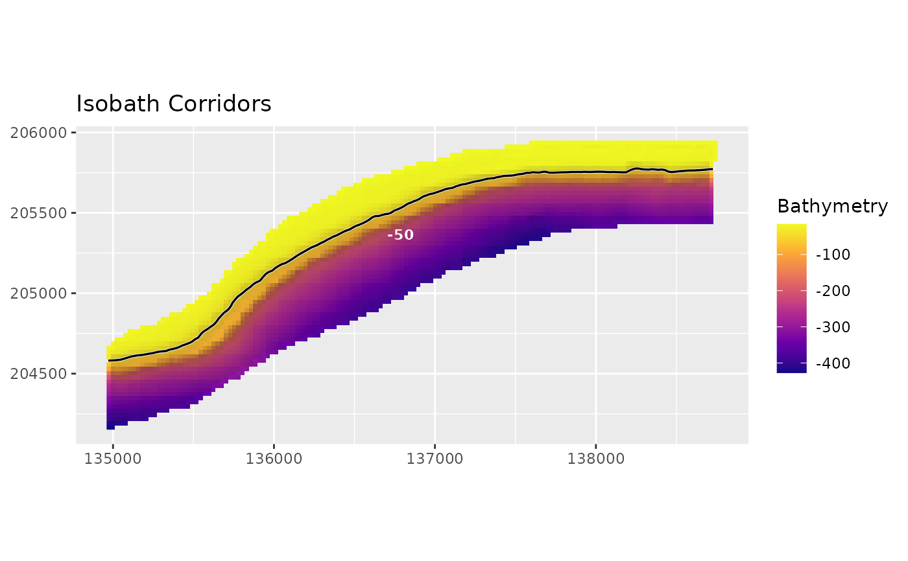

Plots isobath corridor polygons, optionally over hillshaded bathymetry with contour lines. The hillshade layer is visual context only.
Usage
plot_isobath_corridors(
corridors,
bathy = NULL,
isobaths = NULL,
hillshade = TRUE,
background_contours = FALSE,
source_isobaths = TRUE,
isobath_color = "black",
isobath_linewidth = 0.6,
corridor_color = "white",
corridor_linewidth = 0.45,
corridor_fill = NA,
corridor_alpha = 0.2,
labels = TRUE,
label_field = NULL,
title = "Isobath Corridors",
subtitle = NULL,
caption = NULL,
contours = NULL,
...
)Arguments
- corridors
Corridor polygons.
- bathy
Optional raster background.
- isobaths
Optional source isobath lines to draw over the corridors.
- hillshade
Logical. Draw hillshade from
bathywhen available.- background_contours
Logical. Draw general bathymetric background contours. Defaults to
FALSEto keep corridor figures readable.- source_isobaths
Logical. Draw the source isobaths used to create the corridors.
- isobath_color, isobath_linewidth
Source-isobath line styling.
- corridor_color, corridor_linewidth, corridor_fill, corridor_alpha
Corridor polygon styling.
- labels
Logical. Label corridors with
label_field.- label_field
Attribute used for labels. Defaults to
depth_labelwhen present, otherwisecontour_value.- title, subtitle, caption
Plot text.
- contours
Deprecated alias for
background_contours.- ...
Additional arguments passed to
plot_bathy().
Examples
if (requireNamespace("ggplot2", quietly = TRUE)) {
bathy <- read_bathy(blueterra_example("bathy"))
corridors <- make_isobath_corridors(bathy, depths = -50, width = 5)
isobaths <- extract_isobaths(bathy, depths = -50)
plot_isobath_corridors(corridors, bathy, isobaths = isobaths)
}
